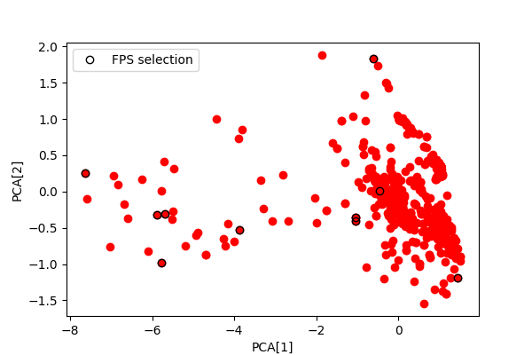

Note
Go to the end to download the full example code.
Sample and Feature Selection with FPS and CUR¶
- Authors:
Davide Tisi @DavideTisi
In this tutorial we generate descriptors using featomic, then select a subset of structures using both the farthest-point sampling (FPS) and CUR algorithms implemented in scikit-matter. Finally, we also generate a selection of the most important features using the same techniques.
First, import all the necessary packages
import ase.io
import chemiscope
import metatensor
import numpy as np
from equisolve.numpy import feature_selection, sample_selection
from featomic import SoapPowerSpectrum
from matplotlib import pyplot as plt
from sklearn.decomposition import PCA
from skmatter import feature_selection as skfeat_selection
Load molecular data¶
Load 500 example BTO structures from file, reading them using ASE.
# Load a subset of :download:`structures <input-fps.xyz>` of the example dataset
n_frames = 500
frames = ase.io.read("input-fps.xyz", f":{n_frames}", format="extxyz")
Compute SOAP descriptors using featomic¶
First, define the featomic hyperparameters used to compute SOAP.
# featomic hyperparameters
hypers = {
"cutoff": {"radius": 6.0, "smoothing": {"type": "ShiftedCosine", "width": 0.5}},
"density": {
"type": "Gaussian",
"width": 0.3,
"scaling": {"type": "Willatt2018", "exponent": 4, "rate": 1, "scale": 3.5},
},
"basis": {
"type": "TensorProduct",
"max_angular": 6,
"radial": {"type": "Gto", "max_radial": 7},
},
}
# Generate a SOAP power spectrum
calculator = SoapPowerSpectrum(**hypers)
rho2i = calculator.compute(frames)
# Makes a dense block
atom_soap = rho2i.keys_to_properties(["neighbor_1_type", "neighbor_2_type"])
atom_soap_single_block = atom_soap.keys_to_samples(keys_to_move=["center_type"])
# Sum over atomic centers to compute structure features
struct_soap = metatensor.sum_over_samples(
atom_soap_single_block, sample_names=["atom", "center_type"]
)
print("atom feature descriptor shape:", atom_soap.block(0).values.shape)
print(
"atom feature descriptor (all in one block) shape:",
atom_soap_single_block.block(0).values.shape,
)
print("structure feature descriptor shape:", struct_soap.block(0).values.shape)
atom feature descriptor shape: (12000, 2688)
atom feature descriptor (all in one block) shape: (20000, 2688)
structure feature descriptor shape: (500, 2688)
Perform atomic environment (i.e. sample) selection¶
Using FPS and CUR algorithms, we can perform selection of atomic environments. These are implemented in equisolve, which provides a wrapper around scikit-matter to allow for interfacing with data stored in the metatensor format.
Suppose we want to select the 10 most diverse environments for each chemical species.
First, we can use the keys_to_properties operation in metatensor to move the neighbour species indices to the properties of the TensorBlocks. The resulting descriptor will be a TensorMap comprised of three blocks, one for each chemical species, where the chemical species indices are solely present in the keys.
print("----Atomic environment selection-----")
# Define the number of structures to select using FPS/CUR
n_envs = 25
print(atom_soap)
print(atom_soap.block(0))
----Atomic environment selection-----
TensorMap with 3 blocks
keys: center_type
8
22
56
TensorBlock
samples (12000): ['system', 'atom']
components (): []
properties (2688): ['neighbor_1_type', 'neighbor_2_type', 'l', 'n_1', 'n_2']
gradients: None
select 10 atomic environments for each chemical species.
# Define the number of structures *per block* to select using FPS
n_envs = 10
# FPS sample selection
selector_atomic_fps = sample_selection.FPS(n_to_select=n_envs, initialize="random").fit(
atom_soap
)
# Print the selected envs for each block
print("atomic envs selected with FPS:\n")
for key, block in selector_atomic_fps.support.items():
print("center_type:", key, "\n(struct_idx, atom_idx)\n", block.samples.values)
selector_atomic_cur = sample_selection.CUR(n_to_select=n_envs).fit(atom_soap)
# Print the selected envs for each block
print("atomic envs selected with CUR:\n")
for key, block in selector_atomic_cur.support.items():
print("center_type:", key, "\n(struct_idx, atom_idx)\n", block.samples.values)
/home/runner/work/atomistic-cookbook/atomistic-cookbook/.nox/sample-selection/lib/python3.11/site-packages/sklearn/utils/_tags.py:354: FutureWarning: The _FPS or classes from which it inherits use `_get_tags` and `_more_tags`. Please define the `__sklearn_tags__` method, or inherit from `sklearn.base.BaseEstimator` and/or other appropriate mixins such as `sklearn.base.TransformerMixin`, `sklearn.base.ClassifierMixin`, `sklearn.base.RegressorMixin`, and `sklearn.base.OutlierMixin`. From scikit-learn 1.7, not defining `__sklearn_tags__` will raise an error.
warnings.warn(
/home/runner/work/atomistic-cookbook/atomistic-cookbook/.nox/sample-selection/lib/python3.11/site-packages/sklearn/utils/_tags.py:354: FutureWarning: The _FPS or classes from which it inherits use `_get_tags` and `_more_tags`. Please define the `__sklearn_tags__` method, or inherit from `sklearn.base.BaseEstimator` and/or other appropriate mixins such as `sklearn.base.TransformerMixin`, `sklearn.base.ClassifierMixin`, `sklearn.base.RegressorMixin`, and `sklearn.base.OutlierMixin`. From scikit-learn 1.7, not defining `__sklearn_tags__` will raise an error.
warnings.warn(
/home/runner/work/atomistic-cookbook/atomistic-cookbook/.nox/sample-selection/lib/python3.11/site-packages/sklearn/utils/_tags.py:354: FutureWarning: The _FPS or classes from which it inherits use `_get_tags` and `_more_tags`. Please define the `__sklearn_tags__` method, or inherit from `sklearn.base.BaseEstimator` and/or other appropriate mixins such as `sklearn.base.TransformerMixin`, `sklearn.base.ClassifierMixin`, `sklearn.base.RegressorMixin`, and `sklearn.base.OutlierMixin`. From scikit-learn 1.7, not defining `__sklearn_tags__` will raise an error.
warnings.warn(
atomic envs selected with FPS:
center_type: LabelsEntry(center_type=8)
(struct_idx, atom_idx)
[[ 68 18]
[113 36]
[140 21]
[285 20]
[339 16]
[339 23]
[339 24]
[341 17]
[347 37]
[436 22]]
center_type: LabelsEntry(center_type=22)
(struct_idx, atom_idx)
[[ 19 9]
[ 55 13]
[166 15]
[198 12]
[216 8]
[285 9]
[324 8]
[341 12]
[433 13]
[466 9]]
center_type: LabelsEntry(center_type=56)
(struct_idx, atom_idx)
[[ 40 7]
[140 2]
[238 3]
[289 6]
[339 3]
[341 4]
[407 0]
[407 7]
[436 6]
[451 7]]
/home/runner/work/atomistic-cookbook/atomistic-cookbook/.nox/sample-selection/lib/python3.11/site-packages/sklearn/utils/_tags.py:354: FutureWarning: The _CUR or classes from which it inherits use `_get_tags` and `_more_tags`. Please define the `__sklearn_tags__` method, or inherit from `sklearn.base.BaseEstimator` and/or other appropriate mixins such as `sklearn.base.TransformerMixin`, `sklearn.base.ClassifierMixin`, `sklearn.base.RegressorMixin`, and `sklearn.base.OutlierMixin`. From scikit-learn 1.7, not defining `__sklearn_tags__` will raise an error.
warnings.warn(
/home/runner/work/atomistic-cookbook/atomistic-cookbook/.nox/sample-selection/lib/python3.11/site-packages/sklearn/utils/_tags.py:354: FutureWarning: The _CUR or classes from which it inherits use `_get_tags` and `_more_tags`. Please define the `__sklearn_tags__` method, or inherit from `sklearn.base.BaseEstimator` and/or other appropriate mixins such as `sklearn.base.TransformerMixin`, `sklearn.base.ClassifierMixin`, `sklearn.base.RegressorMixin`, and `sklearn.base.OutlierMixin`. From scikit-learn 1.7, not defining `__sklearn_tags__` will raise an error.
warnings.warn(
/home/runner/work/atomistic-cookbook/atomistic-cookbook/.nox/sample-selection/lib/python3.11/site-packages/sklearn/utils/_tags.py:354: FutureWarning: The _CUR or classes from which it inherits use `_get_tags` and `_more_tags`. Please define the `__sklearn_tags__` method, or inherit from `sklearn.base.BaseEstimator` and/or other appropriate mixins such as `sklearn.base.TransformerMixin`, `sklearn.base.ClassifierMixin`, `sklearn.base.RegressorMixin`, and `sklearn.base.OutlierMixin`. From scikit-learn 1.7, not defining `__sklearn_tags__` will raise an error.
warnings.warn(
atomic envs selected with CUR:
center_type: LabelsEntry(center_type=8)
(struct_idx, atom_idx)
[[ 55 21]
[ 68 20]
[ 77 30]
[198 36]
[267 32]
[336 33]
[339 24]
[339 36]
[341 17]
[436 19]]
center_type: LabelsEntry(center_type=22)
(struct_idx, atom_idx)
[[ 10 39]
[ 40 10]
[ 70 10]
[130 10]
[166 15]
[170 14]
[216 8]
[285 9]
[326 10]
[466 10]]
center_type: LabelsEntry(center_type=56)
(struct_idx, atom_idx)
[[ 40 7]
[ 77 3]
[172 3]
[219 7]
[289 6]
[296 0]
[339 5]
[339 6]
[407 0]
[436 2]]
Selecting from a combined pool of atomic environments¶
One can also select from a combined pool of atomic environments and structures, instead of selecting an equal number of atomic environments for each chemical species. In this case, we can move the ‘center_type’ key to samples such that our descriptor is a TensorMap consisting of a single block. Upon sample selection, the most diverse atomic environments will be selected, regardless of their chemical species.
print("----All atomic environment selection-----")
print("keys", atom_soap.keys)
print("blocks", atom_soap[0])
print("samples in first block", atom_soap[0].samples)
# Using the original SOAP descriptor, move all keys to properties.
# Define the number of structures to select using FPS
n_envs = 10
# FPS sample selection
selector_atomic_fps = sample_selection.FPS(n_to_select=n_envs, initialize="random").fit(
atom_soap_single_block
)
print(
"atomic envs selected with FPS: \n (struct_idx, atom_idx, center_type) \n",
selector_atomic_fps.support.block(0).samples.values,
)
----All atomic environment selection-----
keys Labels(
center_type
8
22
56
)
blocks TensorBlock
samples (12000): ['system', 'atom']
components (): []
properties (2688): ['neighbor_1_type', 'neighbor_2_type', 'l', 'n_1', 'n_2']
gradients: None
samples in first block Labels(
system atom
0 16
0 17
...
499 30
499 31
)
/home/runner/work/atomistic-cookbook/atomistic-cookbook/.nox/sample-selection/lib/python3.11/site-packages/sklearn/utils/_tags.py:354: FutureWarning: The _FPS or classes from which it inherits use `_get_tags` and `_more_tags`. Please define the `__sklearn_tags__` method, or inherit from `sklearn.base.BaseEstimator` and/or other appropriate mixins such as `sklearn.base.TransformerMixin`, `sklearn.base.ClassifierMixin`, `sklearn.base.RegressorMixin`, and `sklearn.base.OutlierMixin`. From scikit-learn 1.7, not defining `__sklearn_tags__` will raise an error.
warnings.warn(
atomic envs selected with FPS:
(struct_idx, atom_idx, center_type)
[[ 68 12 22]
[ 77 30 8]
[140 21 8]
[166 15 22]
[216 8 22]
[289 6 56]
[339 18 8]
[407 0 56]
[460 4 56]
[466 34 8]]
Perform structure (i.e. sample) selection with FPS/CUR¶
Instead of atomic environments, one can also select diverse structures. We can use the sum_over_samples operation in metatensor to define features in the structural basis instead of the atomic basis. This is done by summing over the atomic environments, labeled by the ‘center’ index in the samples of the TensorMap.
Alternatively, one could use the mean_over_samples operation, depending on the specific inhomogeneity of the size of the structures in the training set.
print("----Structure selection-----")
# Define the number of structures to select *per block* using FPS
n_structures = 10
# FPS structure selection
selector_struct_fps = sample_selection.FPS(
n_to_select=n_structures, initialize="random"
).fit(struct_soap)
struct_fps_idxs = selector_struct_fps.support.block(0).samples.values.flatten()
print("structures selected with FPS:\n", struct_fps_idxs)
# CUR structure selection
selector_struct_cur = sample_selection.CUR(n_to_select=n_structures).fit(struct_soap)
struct_cur_idxs = selector_struct_cur.support.block(0).samples.values.flatten()
print("structures selected with CUR:\n", struct_cur_idxs)
# Slice structure descriptor along axis 0 to contain only the selected structures
struct_soap_fps = struct_soap.block(0).values[struct_fps_idxs, :]
struct_soap_cur = struct_soap.block(0).values[struct_cur_idxs, :]
assert struct_soap_fps.shape == struct_soap_cur.shape
print("Structure descriptor shape before selection ", struct_soap.block(0).values.shape)
print("Structure descriptor shape after selection (FPS)", struct_soap_fps.shape)
print("Structure descriptor shape after selection (CUR)", struct_soap_cur.shape)
----Structure selection-----
/home/runner/work/atomistic-cookbook/atomistic-cookbook/.nox/sample-selection/lib/python3.11/site-packages/sklearn/utils/_tags.py:354: FutureWarning: The _FPS or classes from which it inherits use `_get_tags` and `_more_tags`. Please define the `__sklearn_tags__` method, or inherit from `sklearn.base.BaseEstimator` and/or other appropriate mixins such as `sklearn.base.TransformerMixin`, `sklearn.base.ClassifierMixin`, `sklearn.base.RegressorMixin`, and `sklearn.base.OutlierMixin`. From scikit-learn 1.7, not defining `__sklearn_tags__` will raise an error.
warnings.warn(
structures selected with FPS:
[ 15 71 140 167 172 257 317 326 356 496]
/home/runner/work/atomistic-cookbook/atomistic-cookbook/.nox/sample-selection/lib/python3.11/site-packages/sklearn/utils/_tags.py:354: FutureWarning: The _CUR or classes from which it inherits use `_get_tags` and `_more_tags`. Please define the `__sklearn_tags__` method, or inherit from `sklearn.base.BaseEstimator` and/or other appropriate mixins such as `sklearn.base.TransformerMixin`, `sklearn.base.ClassifierMixin`, `sklearn.base.RegressorMixin`, and `sklearn.base.OutlierMixin`. From scikit-learn 1.7, not defining `__sklearn_tags__` will raise an error.
warnings.warn(
structures selected with CUR:
[ 39 40 68 110 140 289 326 386 398 438]
Structure descriptor shape before selection (500, 2688)
Structure descriptor shape after selection (FPS) (10, 2688)
Structure descriptor shape after selection (CUR) (10, 2688)
Visualize selected structures¶
sklearn can be used to perform PCA dimensionality reduction on the SOAP descriptors. The resulting PC coordinates can be used to visualize the the data alongside their structures in a chemiscope widget.
# Generate a structure PCA
struct_soap_pca = PCA(n_components=2).fit_transform(struct_soap.block(0).values)
assert struct_soap_pca.shape == (n_frames, 2)
Plot the PCA map¶
Notice how the selected points avoid the densely-sampled area, and cover the periphery of the dataset
# Matplotlib plot
fig, ax = plt.subplots(1, 1, figsize=(6, 4))
scatter = ax.scatter(struct_soap_pca[:, 0], struct_soap_pca[:, 1], c="red")
ax.plot(
struct_soap_pca[struct_cur_idxs, 0],
struct_soap_pca[struct_cur_idxs, 1],
"ko",
fillstyle="none",
label="FPS selection",
)
ax.set_xlabel("PCA[1]")
ax.set_ylabel("PCA[2]")
ax.legend()
fig.show()

Creates a chemiscope viewer¶
# Selected level
selection_levels = []
for i in range(len(frames)):
level = 0
if i in struct_cur_idxs:
level += 1
if i in struct_fps_idxs:
level += 2
if level == 0:
level = "Not selected"
elif level == 1:
level = "CUR"
elif level == 2:
level = "FPS"
else:
level = "FPS+CUR"
selection_levels.append(level)
properties = chemiscope.extract_properties(frames)
properties.update(
{
"PC1": struct_soap_pca[:, 0],
"PC2": struct_soap_pca[:, 1],
"selection": np.array(selection_levels),
}
)
widget = chemiscope.show(
frames,
properties=properties,
settings={
"map": {
"x": {"property": "PC1"},
"y": {"property": "PC2"},
"color": {"property": "energy"},
"symbol": "selection",
"size": {"factor": 50},
},
"structure": [{"unitCell": True}],
},
)
widget.save("sample-selection.json.gz")
# display, if in notebook or sphinx
widget

/home/runner/work/atomistic-cookbook/atomistic-cookbook/.nox/sample-selection/lib/python3.11/site-packages/chemiscope/structures/_ase.py:134: UserWarning: the following structure properties are only defined for a subset of frames: ['stress']; they will be ignored
all_names = _ase_list_structure_properties(frames)
/home/runner/work/atomistic-cookbook/atomistic-cookbook/.nox/sample-selection/lib/python3.11/site-packages/chemiscope/structures/__init__.py:93: UserWarning: the following structure properties are only defined for a subset of frames: ['stress']; they will be ignored
return _ase_list_structure_properties(frames)
Perform feature selection¶
Now perform feature selection. In this example we will go back to using the descriptor decomposed into atomic environments, as opposed to the one decomposed into structure environments, but only use FPS for brevity.
print("----Feature selection-----")
# Define the number of features to select
n_features = 200
# FPS feature selection
feat_fps = feature_selection.FPS(n_to_select=n_features, initialize="random").fit(
atom_soap_single_block
)
# Slice atomic descriptor along axis 1 to contain only the selected features
# atom_soap_single_block_fps = atom_soap_single_block.block(0).values[:, feat_fps_idxs]
atom_soap_single_block_fps = metatensor.slice(
atom_soap_single_block,
axis="properties",
selection=feat_fps.support.block(0).properties,
)
print(
"atomic descriptor shape before selection ",
atom_soap_single_block.block(0).values.shape,
)
print(
"atomic descriptor shape after selection ",
atom_soap_single_block_fps.block(0).values.shape,
)
----Feature selection-----
/home/runner/work/atomistic-cookbook/atomistic-cookbook/.nox/sample-selection/lib/python3.11/site-packages/sklearn/utils/_tags.py:354: FutureWarning: The _FPS or classes from which it inherits use `_get_tags` and `_more_tags`. Please define the `__sklearn_tags__` method, or inherit from `sklearn.base.BaseEstimator` and/or other appropriate mixins such as `sklearn.base.TransformerMixin`, `sklearn.base.ClassifierMixin`, `sklearn.base.RegressorMixin`, and `sklearn.base.OutlierMixin`. From scikit-learn 1.7, not defining `__sklearn_tags__` will raise an error.
warnings.warn(
atomic descriptor shape before selection (20000, 2688)
atomic descriptor shape after selection (20000, 200)
Perform feature selection (skmatter)¶
Now perform feature selection. In this example we will go back to using the descriptor decomposed into atomic environments, as opposed to the one decomposed into structure environments, but only use FPS for brevity.
print("----Feature selection (skmatter)-----")
# Define the number of features to select
n_features = 200
# FPS feature selection
feat_fps = skfeat_selection.FPS(n_to_select=n_features, initialize="random").fit(
atom_soap_single_block.block(0).values
)
feat_fps_idxs = feat_fps.selected_idx_
print("Feature indices obtained with FPS ", feat_fps_idxs)
# Slice atomic descriptor along axis 1 to contain only the selected features
atom_dscrptr_fps = atom_soap_single_block.block(0).values[:, feat_fps_idxs]
print(
"atomic descriptor shape before selection ",
atom_soap_single_block.block(0).values.shape,
)
print("atomic descriptor shape after selection ", atom_dscrptr_fps.shape)
----Feature selection (skmatter)-----
Feature indices obtained with FPS [2607 0 920 464 3 411 1 488 1824 921 5 465 29 1179
27 2240 468 1344 4 2244 602 923 489 274 1825 45 916 1180
28 1308 475 470 731 924 46 283 1828 474 450 30 491 2241
730 412 2084 12 477 1835 1636 859 476 1827 1796 496 413 931
936 21 453 1345 899 466 939 940 11 1816 1324 934 900 948
861 928 1490 19 860 925 2 1170 2276 456 1347 1819 1181 1310
13 858 1380 36 210 1372 1812 926 929 2195 947 458 1196 451
1307 492 2267 472 2212 915 462 449 733 725 922 18 37 2523
2532 1365 932 1746 347 473 868 912 502 275 927 1362 2246 1172
485 54 504 484 285 866 395 31 499 1348 480 1316 2092 38
1805 901 913 1941 723 944 2213 898 1187 1939 941 402 907 1364
6 1947 469 1309 467 490 1940 10 905 498 2242 1637 908 904
452 2083 942 1820 937 724 1171 500 933 338 420 2524 1682 2254
483 2221 22 1792 1764 494 7 738 949 9 2268 1832 1618 1323
478 482 950 461]
atomic descriptor shape before selection (20000, 2688)
atomic descriptor shape after selection (20000, 200)
Total running time of the script: (0 minutes 23.236 seconds)